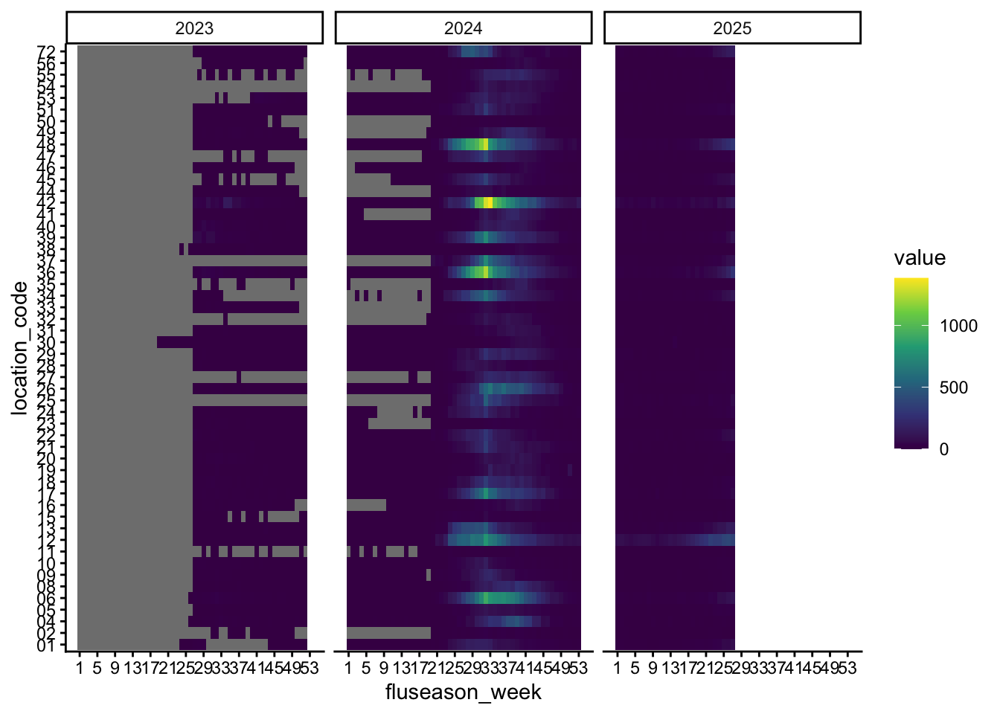
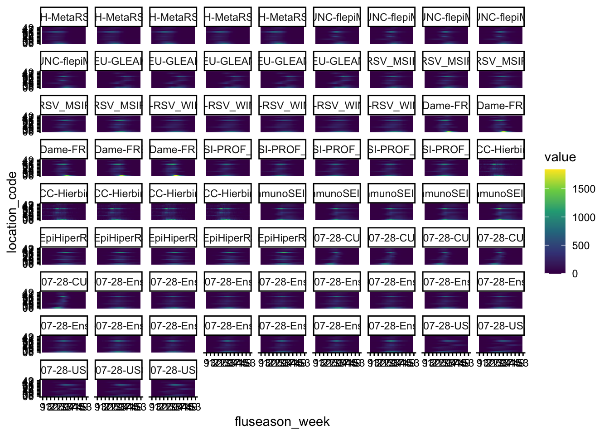
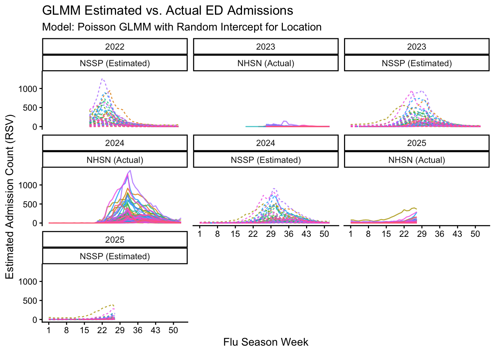

library(tidyverse)
library(arrow)
location_codes <- read_csv("influpaint/influpaint_locations.csv")
#' Get the season year for a given date
#' @param date A Date object
#' @param start_month Integer. Month defining season start. Default is June.
#' @return Integer. The season year.
#' @details
#' The start of the season is defined by `start_month` (default is June).
#' If the date is on or after `start_month`, the season year is the current year.
#' Else, it is the previous year.
season_year <- function(date, start_month = 6) {
year <- as.integer(format(date, "%Y"))
month <- as.integer(format(date, "%m"))
ifelse(month >= start_month, year, year - 1)
}
#' Get the week index within the season for a given date
#' @param date A Date object
#' @param start_month Integer. Month defining season start. Default is June.
#' @return Integer. Week index within the season (1 to 53)
#' @details
#' The start of the season is defined by `start_month` (default is June).
#' The week index is calculated as the number of weeks since the season start date.
season_week <- function(date, start_month = 6) {
sy <- season_year(date, start_month)
season_start <- as.Date(paste(sy, start_month, 1, sep = "-"))
as.integer(floor(as.numeric(date - season_start) / 7) + 1)
}RSV
Training Data Format
| Field | Description | Default or source |
|---|---|---|
location_code |
Location identifier | influpaint/influpaint_locations.csv |
value |
Observed/modelled values | All rates or all counts, scaled consistently |
fluseason_week |
Week index within season | season_week() 1 to 53 |
fluseason |
Season start year | season_year() |
datasetH1 |
High level dataset identifier | e.g. RSV scenario modelling hub |
datasetH2 |
Specific dataset or scenario identifier | e.g. 2023-11-12-NIH-RSV_Phenomenological |
sample |
Sample identifier | e.g. 1.1, 1.2 |
Helpers
Fetch RSV Data
NSSP
National Syndromic Surveillance Program Emergency Department Visits source
pct_ed_visits_rsv : Percent of ED visits that had a discharge diagnosis code of rsv
Earliest date available: 2022-10-01
library(epidatr)
nssp <- pub_covidcast(
source = "nssp",
signals = "pct_ed_visits_rsv",
geo_type = "state",
time_type = "week"
) |>
mutate(geo_value = str_to_upper(geo_value)) |>
left_join(
location_codes |>
select(abbreviation, location_code),
by = c("geo_value" = "abbreviation")
) |>
transmute(
location_code,
fluseason = season_year(as.Date(time_value)),
fluseason_week = season_week(as.Date(time_value)),
value,
datasetH1 = "NSSP",
datasetH2 = "NSSP",
sample = "1"
)
nssp |>
ggplot(aes(x = fluseason_week, y = location_code)) +
facet_wrap(~fluseason) +
geom_tile(aes(fill = value)) +
scale_fill_viridis_c() +
scale_x_continuous(breaks = seq(1, 53, by = 4)) +
theme_classic()
nssp |>
skimr::skim() |>
as_tibble() |>
select(skim_variable, complete_rate)# A tibble: 7 × 2
skim_variable complete_rate
<chr> <dbl>
1 location_code 1
2 datasetH1 1
3 datasetH2 1
4 sample 1
5 fluseason 1
6 fluseason_week 1
7 value 1write_parquet(nssp, "RSV_files/NSSP.parquet")RSV-Net
Weekly Rates of Laboratory-Confirmed RSV Hospitalizations from the RSV-NET Surveillance System source:
RSV scenario modeling hub time-series.csv converts to weekly number of hospitalizations in each given state
rsvnet <- read_csv(
"https://raw.githubusercontent.com/midas-network/rsv-scenario-modeling-hub/main/target-data/time-series.csv"
) |>
filter(
age_group == "0-130",
location != "US"
) |>
transmute(
location_code = location,
fluseason = season_year(date),
fluseason_week = season_week(date),
value = observation,
datasetH1 = "RSV-Net",
datasetH2 = "RSV-Net",
sample = "1"
) |>
filter(fluseason >= 2018)
rsvnet |>
ggplot(aes(x = fluseason_week, y = location_code)) +
facet_wrap(~fluseason) +
geom_tile(aes(fill = value)) +
scale_fill_viridis_c() +
scale_x_continuous(breaks = seq(1, 53, by = 4)) +
theme_classic()
rsvnet |>
skimr::skim() |>
as_tibble() |>
select(skim_variable, complete_rate)# A tibble: 7 × 2
skim_variable complete_rate
<chr> <dbl>
1 location_code 1
2 datasetH1 1
3 datasetH2 1
4 sample 1
5 fluseason 1
6 fluseason_week 1
7 value 0.739write_parquet(rsvnet, "RSV_files/RSV_NET.parquet")Missing values & exlcude 2020?
NHSN
National Healthcare Safety Network (NHSN) source
totalconfrsvnewadm: Total number of new hospital admissions of patients with confirmed RSV captured during the reporting week (Sunday - Saturday)
library(RSocrata)
nhsn <- read.socrata("https://data.cdc.gov/resource/ua7e-t2fy.json") |>
select(
weekendingdate,
jurisdiction,
totalconfrsvnewadm
) |>
transmute(
fluseason = season_year(as.Date(weekendingdate)),
fluseason_week = season_week(as.Date(weekendingdate)),
abbreviation = jurisdiction,
value = as.numeric(totalconfrsvnewadm),
datasetH1 = "NHSN",
datasetH2 = "NHSN",
sample = "1"
) |>
filter(abbreviation != "USA") |>
left_join(
location_codes |> select(abbreviation, location_code),
by = "abbreviation"
) |>
drop_na(location_code) |>
filter(fluseason >= 2023)
nhsn |>
ggplot(aes(x = fluseason_week, y = location_code)) +
facet_wrap(~fluseason) +
geom_tile(aes(fill = value)) +
scale_fill_viridis_c() +
scale_x_continuous(breaks = seq(1, 53, by = 4)) +
theme_classic()
nhsn |>
skimr::skim() |>
as_tibble() |>
select(skim_variable, complete_rate)# A tibble: 8 × 2
skim_variable complete_rate
<chr> <dbl>
1 abbreviation 1
2 datasetH1 1
3 datasetH2 1
4 sample 1
5 location_code 1
6 fluseason 1
7 fluseason_week 1
8 value 0.715write_parquet(nhsn, "RSV_files/NHSN.parquet")Modelling Hub
Sample output: Each trajectory must have a unique identifier combining run_grouping and stochastic_run. Quantile and CDF outputs: There is no stochastic variation. The sample column can also be set to NA or to a consistent identifier that reflects the quantile or epiweek?
library(httr2)
library(purrr)
gh_ls <- function(url) {
request(url) |> req_perform() |> resp_body_json()
}
base <- "https://api.github.com/repos/midas-network/rsv-scenario-modeling-hub/contents/model-output"
parquet_files <-
gh_ls(base) |>
keep(~ .x$type == "dir") |>
map(~ gh_ls(.x$url)) |>
flatten() |>
keep(~ grepl("\\.parquet$", .x$name))
data <- parquet_files |>
set_names(map_chr(
parquet_files,
~ sub(".*/(.*)\\.gz\\.parquet$", "\\1", .x$path)
)) |>
map(~ read_parquet(.x$download_url))
library(tidytable)
rsv_smh <- data |>
imap(
~ .x |>
as_tidytable() |>
filter(
target == "inc hosp",
age_group == "0-130"
) |>
mutate(
forecast_date = as.Date(origin_date) + weeks(horizon - 1),
run_grouping = if ("run_grouping" %in% names(.)) {
run_grouping
} else {
NA_character_
},
stochastic_run = if ("stochastic_run" %in% names(.)) {
stochastic_run
} else {
NA_character_
},
) |>
transmute(
location_code = location,
fluseason = season_year(forecast_date),
fluseason_week = season_week(forecast_date),
value,
datasetH1 = "RSV_SMH",
datasetH2 = paste(.y, scenario_id, sep = "_"),
sample = case_when(
output_type == "sample" ~ paste0(run_grouping, "_", stochastic_run),
output_type == "quantile" ~ paste0("q", output_type_id),
output_type == "cdf" ~ paste0("p", output_type_id)
)
)
) |>
bind_rows() |>
filter(location_code != "US")
# Aggregated plot
plot_data <- rsv_smh |>
summarise(
value = mean(value, na.rm = TRUE),
.by = c(fluseason, datasetH2, location_code, fluseason_week)
)
plot_data |>
filter(fluseason == "2024") |>
ggplot(aes(x = fluseason_week, y = location_code)) +
facet_wrap(~datasetH2) +
geom_tile(aes(fill = value)) +
scale_fill_viridis_c() +
scale_x_continuous(breaks = seq(1, 53, by = 4)) +
theme_classic()
write_parquet(rsv_smh, "RSV_files/RSV_SMH.parquet")Converting NSSP to Counts
We converted NSSP data, which records the percentage of emergency department visits due to RSV, into estimated admission counts. Using weeks and locations with NHSN data (which records the counts), we learned a location-specific scaling factor linking the reported percentage to actual counts. The scaling was done using a Poisson generalized linear mixed-effects model (GLMM) with a random intercept for each location. The predicted counts are the observed percentage scaled by the learned location-specific factor.
library(lme4)
# Predict counts and merge
nssp <- read_parquet("RSV_files/NSSP.parquet")
nhsn <- read_parquet("RSV_files/NHSN.parquet")
fit_glmm <- inner_join(
nssp |>
select(location_code, fluseason, fluseason_week, value),
nhsn |>
select(location_code, fluseason, fluseason_week, value),
by = c("location_code", "fluseason", "fluseason_week")
) |>
filter(value.y >= 0, value.x > 0) |>
mutate(log_value = log(value.x)) |>
(\(x) {
glmer(
value.y ~ (1 | location_code) + offset(log_value),
data = x,
family = poisson(link = "log")
)
})()
nssp_counts <- nssp |>
filter(value > 0) |>
mutate(
log_value = log(value),
value = predict(fit_glmm, newdata = cur_data(), type = "response")
) |>
select(location_code, fluseason, fluseason_week, value) |>
right_join(
nssp |> select(-value),
by = c("location_code", "fluseason", "fluseason_week")
)
write_parquet(nssp_counts, "RSV_files/NSSP_COUNTS.parquet")
#NHSN vs NSSP Plot
bind_rows(
nssp_counts |> mutate(source = "NSSP (Estimated)"),
nhsn |> mutate(source = "NHSN (Actual)")
) |>
ggplot(aes(
x = fluseason_week,
y = value,
colour = location_code,
linetype = source
)) +
facet_wrap(~ fluseason + source) +
geom_line(alpha = 0.8) +
labs(
title = "GLMM Estimated vs. Actual ED Admissions",
subtitle = paste("Model: Poisson GLMM with Random Intercept for Location"),
y = "Estimated Admission Count (RSV)",
x = "Flu Season Week"
) +
theme_classic()+
theme(legend.position = "none") +
scale_x_continuous(breaks = seq(1, 53, by = 7))
Summary
Surveillance data includes: - NSSP: Estimated ED visits due to RSV (converted to counts) -> 8350 rows. - RSV-Net: Laboratory-confirmed RSV hospitalizations -> 5502 rows. - NHSN: Hospital admissions of patients with confirmed RSV -> 6864 rows.
Modeling data includes: - RSV Scenario Modeling Hub: Projected hospitalizations under various scenarios -> 11525100 rows.